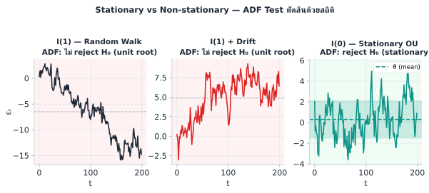
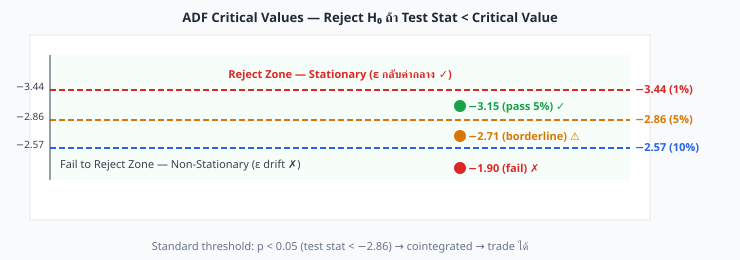
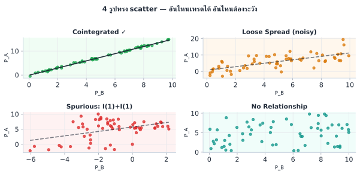
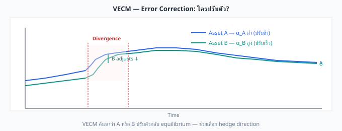
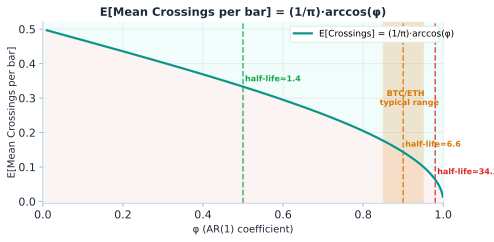
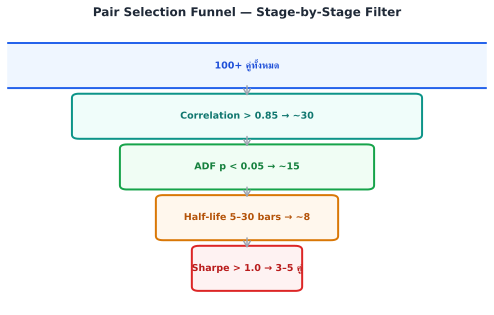

Statistical Arbitrage · บทที่ 5
Cointegration
Engle-Granger · Johansen · VECM
แก่นของบทนี้ — ADF Equation
Correlation สูงไม่พอสำหรับ stat arb — ต้องการ cointegration :
ADF test ประมาณค่า δ จาก regression นี้:
$$\Delta\varepsilon_t = \alpha + \delta\varepsilon_{t-1} + \sum_{k=1}^{p}\gamma_k\Delta\varepsilon_{t-k} + \eta_t$$
\(H_0{:}\ \delta = 0\) (unit root — ε ไม่ stationary) \(H_1{:}\ \delta < 0\) (stationary — ε กลับค่ากลาง)cointegrated
นิยามทางการ — Cointegration (Engle & Granger, 1987)
Series X_t และ Y_t แต่ละตัวเป็น I(1) (integrated of order 1 — มี unit root, ไม่ stationary) แต่คู่นี้ cointegrated ถ้ามีค่า β ที่ทำให้:
Z_t = X_t − β·Y_t เป็น I(0) (stationary, กลับหาค่ากลาง)
กล่าวอีกนัย: แม้ X_t และ Y_t จะ random walk แยกกัน แต่ทั้งคู่ถูก "ดึง" ไว้ด้วย long-run equilibrium relationship เดียวกัน — spread ε = Z_t จึงไม่ drift ออกไปตลอด
5.1 Correlation ≠ Cointegration — ความแตกต่างที่สำคัญ

I(1) random walk และ I(1)+drift ไม่ผ่าน ADF (unit root) — I(0) OU process ผ่าน (stationary, mean-reverting)
Scatter Plot — มองความสัมพันธ์ด้วยตา ก่อนลงมือทดสอบสถิติ
ก่อนรัน test สถิติใด ๆ ให้ plot ราคาสองขาเป็น scatter ก่อนเสมอ — แกนนอนคือ log ราคาขา B แกนตั้งคือ log ราคาขา A · จุดหนึ่งจุดคือราคาคู่กัน ณ ช่วงเวลาหนึ่ง · scatter บอกหลายอย่างที่ตัวเลข ρ ตัวเดียวบอกไม่ได้ และเป็นวิธีที่เร็วที่สุดในการคัดคู่ที่ "แย่ชัด ๆ" ออก

ADF critical values: −3.44 (1%), −2.86 (5%), −2.57 (10%) — test stat ที่ต่ำกว่า critical value → reject H₀ → spread stationary
scatter plot บอกอะไรบ้าง
ความชันของเส้น best-fit = β — hedge ratio ที่จะคำนวณเป็นทางการในบทที่ 4 ระยะจากจุดถึงเส้น = ε — จุดเหนือเส้น = A แพงกว่า fair (ε > 0), จุดใต้เส้น = A ถูกกว่า (ε < 0)cloud แน่นรอบเส้น = ρ สูง — ความสัมพันธ์เชิงเส้นชัด · cloud ฟุ้ง = ρ ต่ำoutlier เห็นได้ทันที — จุดที่หลุดไกลออกไปอาจเป็น bad tick หรือ event ผิดปกติ ต้องตรวจก่อน fit β
แต่ scatter ที่ "ดูเป็นเส้น" ไม่ได้แปลว่าใช้ได้เสมอ — รูปทรงของ cloud เตือนปัญหาที่ ρ ตัวเดียวจับไม่ได้:

เฉพาะ "เส้นตรงแน่น" เท่านั้นที่พร้อมเข้า pipeline — อีก 3 แบบเตือนปัญหาคนละชนิด
ข้อจำกัด — scatter plot ไม่ได้แทนการทดสอบ
scatter เป็น "first look" ที่เร็วและทรงพลัง แต่มันมองไม่เห็น ลำดับเวลา — คู่ที่ scatter ดูแน่นเป็นเส้นตรง อาจยัง drift ได้ถ้า A กับ B ต่างก็ trending ขึ้นพร้อมกัน (spurious correlation) ดังนั้น scatter ใช้ คัดออก คู่ที่แย่ชัด ๆ ได้เร็ว แต่การ คัดผ่าน ต้องให้ cointegration test (§5.2) ยืนยันเสมอ
5.2 Engle-Granger 2-Step Test
วิธีที่ง่ายที่สุด ทำ 2 ขั้น:
1
Regress log(P_A) บน log(P_B):
2
ADF Test บน ε̂_t:
หมายเหตุ: ADF (และ KPSS ที่เป็น test คู่กัน) ใช้ที่นี่เป็นเครื่องมือตัดสิน cointegration — กลไกภายใน สมมติฐาน H₀ และการตีความเชิงลึก ของทั้งสอง test อธิบายเต็มใน บทที่ 6
⚠️ Look-ahead Bias — ข้อผิดพลาดที่พบบ่อยที่สุดในการ backtest cointegration
ถ้าคุณ (1) รัน ADF บนข้อมูลทั้งหมด เพื่อเลือกคู่ที่ผ่าน แล้ว (2) backtest บนข้อมูลชุดเดิม — นั่นคือ look-ahead bias : คุณเลือกคู่ที่ "รู้อยู่แล้ว" ว่าผ่าน ซึ่ง backtest จะดูดีเสมอโดยไม่สะท้อน live performance จริงวิธีป้องกัน: ใช้ walk-forward validation — แบ่งข้อมูลเป็น in-sample (เลือกคู่ + calibrate) และ out-of-sample (backtest) แยกกันเสมอ สัดส่วนที่ใช้บ่อย: 60% in-sample / 40% out-of-sample หรือ rolling window re-test ทุกเดือน
ADF Test อ่านผลอย่างไร
p-value ความหมาย ควรทำ < 0.01 Reject H₀ อย่างมั่นใจมาก Cointegrated — trade ได้ 0.01–0.05 Reject H₀ ที่ 95% confidence Cointegrated — trade ได้ (standard threshold) 0.05–0.10 Borderline ระวัง — ลด position size หรือรอข้อมูลเพิ่ม > 0.10 ไม่ reject H₀ ไม่ cointegrated — ห้าม trade spread
แนวปฏิบัติ — p-value เท่าไรใช้ได้จริง?
Cutoff มาตรฐาน: p < 0.05 ใช้ได้ในกรณีทั่วไป แต่นักปฏิบัติมักพิจารณาเพิ่มเติม:
Window size สำคัญมาก — ข้อมูล < 100 observations ให้ p-value ที่ไม่น่าเชื่อถือ: test มี power ต่ำ ทำให้ fail to reject H₀ แม้ spread จะ stationary จริง · ใช้ ≥ 250 observations ขึ้นไปสำหรับ hourly bars (ประมาณ 10 วัน)p < 0.01 — ควรใช้เป็น threshold สำหรับ position ขนาดใหญ่ (high-conviction)p = 0.05–0.10 (borderline) — ลด position size ลงครึ่งหนึ่ง หรือรอ re-test ด้วยข้อมูลใหม่ ≥ 30 วันRe-test ทุกเดือน (หรือเมื่อ spread ค้างนอก 3σ > 2 วัน) — cointegration เปลี่ยนตาม regime ของตลาด
Model Risk — ADF มี Power ต่ำในตัวอย่างขนาดเล็ก
ADF test มีจุดอ่อนที่สำคัญหลายประการที่ต้องระวัง:
Low power เมื่อ sample น้อย — ถ้า n < 100 observations ADF มักจะ fail to reject H₀ แม้ spread จะ stationary จริง ผลลัพธ์คือ "false negative" — ทิ้งคู่ที่ trade ได้จริงStructural break — ถ้า β หรือ equilibrium เปลี่ยนกลางทาง (เช่น event ใหญ่ หรือ delisting) ADF อาจ pass เพราะดู aggregate ที่รวม 2 regime เข้าด้วยกันBorderline cases ต้องระวังเป็นพิเศษ — p = 0.04–0.06 ไม่มีความต่างทางสถิติที่มีนัยสำคัญ การตัดสินใจจาก threshold ตายตัว (p=0.05) ใน zone นี้มีความเสี่ยงสูงวิธีลด model risk : ใช้ข้อมูลยาวขึ้น + ทดสอบทั้งสองทิศทาง (A~B และ B~A) + ยืนยันด้วย Hurst exponent (บทที่ 6) + re-test ทุกเดือน
ข้อจำกัดของ Engle-Granger
Test เพียง 1 cointegrating vector (ดีสำหรับ 2 assets)
ลำดับ regression (A บน B vs B บน A) ให้ผลต่างกัน — ควรทดสอบทั้งสองทาง
มี power ต่ำเมื่อ sample น้อย (< 100 observations)
⚠️ Engle-Granger Asymmetry — จุดที่ผู้ใช้มักพลาด
สิ่งที่หลายคนเข้าใจผิด: ถ้า regress A~B ได้ β_AB = 1.003 หลายคนคิดว่า regress B~A จะได้ β_BA = 1/1.003 ≈ 0.997 — แต่นั่นผิด
การ regress log(A) ~ log(B) ให้ β_AB = Cov(A,B)/Var(B)
ความสัมพันธ์ที่ถูก: β_AB × β_BA = ρ² (ค่า R²) — ไม่ใช่ 1 อย่างที่คาดต่างกันจริงๆ ไม่ใช่แค่ scale
ผลที่ตามมา: ADF test บน ε_AB อาจ pass (p=0.03) แต่ ADF บน ε_BA อาจ fail (p=0.12) — หรือกลับกันวิธีปฏิบัติ: ทดสอบทั้งสองทิศทาง แล้วเลือก β ที่ให้ ADF p-value ต่ำกว่า (residual stationary กว่า)
# Python: ทดสอบทั้งสองทิศทาง (β แต่ละทิศไม่ได้สัมพันธ์แบบ 1/x)
5.3 Johansen Test — เมื่อมีมากกว่า 2 Assets
Johansen test ทดสอบ cointegration ของ n assets พร้อมกัน โดยหาจำนวน cointegrating vectors r:
H₀: r = 0 (ไม่มี cointegration เลย)
H₀: r ≤ 1 (มีได้อย่างมาก 1 vector)
...
ทดสอบต่อไปจนถึง r = n−1
ถ้า Trace statistic หรือ Max eigenvalue > critical value → reject H₀
จำนวน Assets ใช้ Test ไหน เหตุผล 2 (pairs) Engle-Granger ง่ายกว่า ผลเท่ากัน 3+ (basket) Johansen หา cointegrating vectors ทุกตัว ต้องการรู้ว่าใครปรับตัว VECM ระบุ adjustment coefficients
5.4 VECM — ใครเป็นฝ่ายปรับตัวกลับ?
เมื่อรู้ว่า cointegrated แล้ว VECM (Vector Error Correction Model) บอกว่า เมื่อ spread ห่างจาก equilibrium ใคร (A หรือ B) เป็นฝ่ายปรับตัวกลับ
VECM สำหรับ 2 assets
Δlog(P_A)_t = α_A · ε_{t-1} + γ_A · Δlog(P_A)_{t-1} + u_{A,t}
Δlog(P_B)_t = α_B · ε_{t-1} + γ_B · Δlog(P_B)_{t-1} + u_{B,t}
α_A, α_B = adjustment coefficients — บอกว่าใครปรับตาม error

VECM ระบุว่าควร trade ฝั่งไหน — ถ้า A ปรับ: trade A | ถ้า B ปรับ: trade B | ถ้าทั้งคู่ปรับ: trade ทั้งคู่
VECM บอกอะไรสำหรับ Bybit↔Lighter?
ถ้า Bybit เป็น "price leader" (α_Bybit ≈ 0) และ Lighter ปรับตาม (α_Lighter > 0):Long Lighter Short Lighter
5.5 Pseudo-code
# Engle-Granger Cointegration Test function test_cointegration_eg (log_P_A, log_P_B):# Step 1: OLS regression ols (log_P_B, log_P_A) # log_P_A = alpha + beta*log_P_B # Step 2: ADF test on residuals adf_test (residuals, lags=1 )0.05 return {cointegrated, p_value, adf_stat, beta, residuals}# Check VECM adjustment direction function vecm_adjustment (log_P_A, log_P_B, residuals):diff (log_P_A) # Δlog(P_A) diff (log_P_B) # Δlog(P_B) 1 ] # ε_{t-1} ols_slope (err_lag, d_A[1 :]) # A's adjustment coefficient ols_slope (err_lag, d_B[1 :]) # B's adjustment coefficient # Sign logic: ε = log(P_A) - β·log(P_B) # ε > 0 → A แพงกว่า equilibrium → A ต้องลง (α_A < 0) · B ต้องขึ้น (α_B > 0) # ε < 0 → A ถูกกว่า equilibrium → A ต้องขึ้น (α_A > 0) · B ต้องลง (α_B < 0) # A adjusts: α_A < 0 · B adjusts: α_B > 0 (ตรงข้ามกัน เพราะ ε นิยามจาก A−β·B) 0.05 0.05 return {alpha_A, alpha_B, A_adjusts, B_adjusts}
Running Example: Bybit↔Lighter ADF Test Result
ข้อมูล: 90 วัน, รายชั่วโมง (2,160 observations)
Step 1 — OLS:
log(P_Bybit) = 0.003 + 1.0049·log(P_Lighter) + ε̂
β = 1.0049, R² = 0.9998
→ β > 1.0 แปลว่า Bybit เคลื่อนไหว 0.49% มากกว่า Lighter ต่อการขยับ 1% ของ Lighter
(อาจจาก liquidity premium หรือ fee structure ที่ต่างกัน)
Step 2 — ADF test บน ε̂:
ADF statistic = −4.82
p-value = 0.0003 ← ผ่าน! (p ≪ 0.05)
Critical values: 1%=−3.44, 5%=−2.86, 10%=−2.57
ผล: ADF stat (−4.82) < Critical (−3.44) → Reject H₀ → Stationary → Cointegrated ✓
VECM:
α_Bybit = −0.02 (ปรับนิดหน่อย)
α_Lighter = +0.18 (ปรับมากกว่า)
→ Lighter เป็นฝ่ายปรับตัว → trade Lighter เป็นหลัก
Re-test เมื่อไร?
สัญญาณ ควรทำ p-value ขึ้นผ่าน 0.05 ใน monthly re-test หยุด trade ทันที re-evaluate คู่นี้ β เปลี่ยน > 5% จากค่าเดิม Re-run test ด้วย data ใหม่ Spread ค้างนอก 3σ > 2 วัน Emergency re-test — อาจ regime change
5.6 Shapiro-Wilk Test — ตรวจ Normality ของ ε
ทำไมต้องตรวจ Normality?
Z-score threshold ±2σ อาศัยสมมติว่า ε ~ Normal distribution — ถ้า ε มี fat tail หรือ skew, threshold นี้จะ underestimate ความเสี่ยง ทำให้เข้า position บ่อยเกินจริง
Shapiro-Wilk test ตรวจสอบว่า sample ε มาจาก Normal distribution หรือไม่:
Hypothesis ความหมาย ผลต่อการ trade H₀: ε ~ Normal ε กระจายแบบปกติ ใช้ standard z-score (±2σ) ได้ปลอดภัย H₁: ε ไม่ Normal ε มี fat tail / skew ใช้ Robust Z-score แทน (MAD-based, ดู บทที่ 10 )
Decision Rule
ตัดสินใจจาก p-value
p ≥ 0.05: Fail to reject H₀ → normality ไม่ถูก reject → ε likely normal → z-score ±2σ ใช้ได้p < 0.05: Reject H₀ → ε ไม่ normal (fat tail หรือ skew) → ควรใช้ MAD-based robust z-score แทน
from scipy.stats import shapiro
def shapiro_test(residuals, alpha=0.05):
"""
ทดสอบ Normality ของ residuals ε
คืนค่า: p_value, is_normal (bool), recommendation
"""
stat, p_value = shapiro(residuals)
is_normal = p_value >= alpha
if is_normal:
recommendation = "standard_zscore" # ใช้ σ-based threshold ได้
else:
recommendation = "robust_zscore" # ใช้ MAD-based (ch10 §10.3)
return {
"stat": round(stat, 4),
"p_value": round(p_value, 4),
"is_normal": is_normal,
"recommendation": recommendation
}
ข้อจำกัดของ Shapiro-Wilk
ทำงานได้ดีกับ n ≤ 5,000 — ถ้า sample ใหญ่มากจะ reject H₀ ทุกคู่ (sensitive เกิน)
ถ้า n > 5,000: ใช้ D'Agostino K² test หรือดู QQ-plot แทน
Fat tail เล็กน้อย (p = 0.03–0.05) ≠ หยุดเทรด — แค่ใช้ robust z-score แทน
Running Example: BTC/ETH CFD บน MT5
ข้อมูล: 180 วัน, hourly bars
β_OLS = 0.0444 (จาก scatter plot)
ε = log(P_BTC) − 0.0444 × log(P_ETH)
Shapiro-Wilk result:
stat = 0.9612
p_value = 0.031 → p < 0.05 → Reject H₀
สรุป: ε ของ BTC/ETH มี fat tail เล็กน้อย
→ ใช้ MAD-based robust z-score (
บทที่ 10 §10.3 )
→ ไม่ได้หมายความว่าคู่นี้ใช้ไม่ได้ แค่ปรับ threshold method
โจทย์ 5.4 — Shapiro-Wilk Decision
ทดสอบ Shapiro-Wilk บน ε ของ EURUSD↔GBPUSD ได้ p-value = 0.003
ถาม: (ก) ควรใช้ standard หรือ robust z-score? (ข) ค่า p ต่ำมากบอกอะไร?
ดูคำตอบ
(ก) p = 0.003 < 0.05 → Reject H₀ → ε ไม่ Normal → ใช้ Robust Z-score (MAD-based)
(ข) p ต่ำมากบอกว่า ε มี fat tail หรือ skewness ชัดเจน — อาจเกิดจาก jump events ขณะที่ ECB/BoE ประกาศนโยบายการเงิน หรือ flash crash ใน FX market ซึ่ง z-score ±2σ จะ underestimate ความเสี่ยงถ้าใช้ต่อไป
5.7 Crossing Statistics — วัดความถี่ Mean Reversion
แก่นความคิด
ADF บอกว่า ε กลับมาหา mean ในที่สุด — แต่ไม่บอกว่า บ่อยแค่ไหน Crossing Statistics ตอบคำถามนี้: ε ตัดผ่านเส้นกลางกี่ครั้งต่อหน่วยเวลา
E[Crossings] ≈ (1/π) · arccos(φ)
โดย φ คือ AR(1) coefficient จากการ regress ε_t บน ε_{t-1}:
ε_t = φ · ε_{t-1} + η_t, |φ| < 1
ความหมาย:
φ ≈ 0 → E[Crossings] ≈ (1/π)·arccos(0) = 0.50/period ← ตัดถี่มาก (ดี)
φ ≈ 0.65 → E[Crossings] ≈ (1/π)·arccos(0.65) ≈ 0.28/period
φ ≈ 0.92 → E[Crossings] ≈ (1/π)·arccos(0.92) ≈ 0.13/period
φ ≈ 1 → E[Crossings] → 0 ← ตัดน้อยมาก (ไม่ดี)
กฎง่ายๆ: φ น้อย = ดี เพราะ ε ตัดถี่
ยิ่ง φ ต่ำ ยิ่งมี trading opportunity มาก แต่ต้อง balance กับ Half-life:
φ ต่ำมาก (≈ 0) → ε เดินแบบ white noise → อาจ trade ไม่ทัน (spread กลับเร็วเกินจนจับไม่ได้)
φ สูง (≈ 0.99) → ε persistent มาก → กินทุน margin นาน → ไม่คุ้มค่า
Sweet spot: φ = 0.85–0.97 สำหรับ swing (daily, τ₁/₂ ≤ 24h), φ = 0.70–0.85 สำหรับ intraday
ความสัมพันธ์กับ Half-life
Crossing Statistics กับ Half-life บอกข้อมูลเดียวกันในมุมต่าง:
Metric สูตร มุมมอง Half-life τ₁/₂ = ln(2) / κ ≈ −ln(2) / ln(φ) ε ใช้เวลานานแค่ไหนกลับ 50% ของ gap E[Crossings] (1/π)·arccos(φ) ε ตัดผ่านค่าเฉลี่ยกี่ครั้งต่อ bar

กราฟ E[Crossings] = (1/π)·arccos(φ) — φ น้อยลง เส้นขึ้น = ตัดถี่ขึ้น | BTC/ETH อยู่ขวาสุด (slow reversion)
import numpy as np
def crossing_rate(residuals):
"""
คำนวณ AR(1) coefficient φ และ expected crossing rate
"""
# Fit AR(1): ε_t = φ·ε_{t-1} + η
y = residuals[1:]
x = residuals[:-1]
phi = np.dot(x, y) / np.dot(x, x) # OLS slope
# Crossing rate formula
e_crossings = (1 / np.pi) * np.arccos(phi)
# Half-life from φ
half_life = -np.log(2) / np.log(phi) # in bars
return {
"phi": round(phi, 4),
"e_crossings": round(e_crossings, 4), # per bar
"half_life_bars": round(half_life, 1)
}
Running Example: BTC/ETH — ผ่านหรือไม่?
BTC/ETH (hourly bars, 180 วัน):
AR(1) coefficient φ = 0.9602
E[Crossings] = (1/π)·arccos(0.9602) = 0.091 crossings/bar
Half-life = −ln(2)/ln(0.9602) = 17.1 hours ✓ (ตรงกับ screenshot)
ประเมิน:
φ = 0.9602 → อยู่ใน sweet spot (0.85–0.97 สำหรับ swing)
→ เหมาะกับ overnight swing strategy
→ ไม่เหมาะกับ intraday scalping (ε กลับช้าเกิน)
→ ใช้ z_entry = 2.0, hold target = 8–20h
โจทย์ 5.5 — เปรียบ Crossing Rate
คู่ A: φ = 0.92 | คู่ B: φ = 0.65 — ทั้งสองผ่าน ADF test
ถาม: คู่ไหนเหมาะ intraday (hold ≤ 4h)? คู่ไหนเหมาะ swing (hold 1–3 วัน)?
ดูคำตอบ
คู่ B (φ=0.65) เหมาะ intraday:
คู่ A (φ=0.92) เหมาะ swing:
5.8 Pair Selection Pipeline — 3-Step Funnel
แก่นความคิด — ลำดับขั้นตอน
ตรวจแบบ funnel: เริ่มจาก test ที่เร็วและถูก (Correlation) กรอง 80% ของคู่ออก → ค่อยทำ test ที่ละเอียดขึ้น (Cointegration) → สุดท้ายตรวจคุณภาพ residual (Normality + Crossing Rate) เพื่อยืนยัน trade-readiness
3 ขั้นตอน
ขั้น Test Threshold ถ้าผ่าน ถ้าไม่ผ่าน 1 Correlation ρ (§5.1) ρ ≥ 0.70 → ขั้น 2 ตัดออก (เร็ว, ถูก) 2 ADF Cointegration (§5.2) p < 0.05 → ขั้น 3 ตัดออก 3a Shapiro-Wilk (§5.6) p ≥ 0.05 → standard z → กำหนด z-score method ไม่ตัด — แค่เปลี่ยน method 3b Crossing Rate φ (§5.7) φ < 0.97 (swing, τ₁/₂ ≤ 24h) → เทรดได้ Hold time นานเกินไปสำหรับ target
ถ้าต้องการ double-confirmation: H < 0.5 → mean-reverting confirmed → เพิ่ม confidence ก่อนเปิด position ขนาดใหญ่
⚠️ สำคัญ: รัน Funnel นี้บน In-Sample Data เท่านั้น
การใช้ข้อมูลทั้งหมด (รวม future data ที่ยังไม่เกิด) ในการรันทั้ง 3-step funnel แล้ว backtest บนข้อมูลชุดเดิมคือ look-ahead bias ที่จะทำให้ผล backtest ดูดีเกินจริงอย่างมากกฎ: Pair selection (steps 1–3) ต้องทำบน in-sample window เท่านั้น → ทดสอบ live หรือ backtest บน out-of-sample window แยกต่างหาก → re-run funnel ทุกครั้งที่ขยาย in-sample window

Funnel กรองจาก 100 → 3–5 คู่ที่ผ่านทุก criterion — ไม่ต้องรีบข้ามขั้น
เลือกใช้เครื่องมือไหน — ไม่จำเป็นต้องใช้ทุกอัน
บทนี้แนะนำเครื่องมือคัดกรองหลายตัว แต่ ไม่ใช่ทุกคู่ต้องผ่านทุก test — เครื่องมือแต่ละตัวตอบคนละคำถาม มีต้นทุน (เวลา/ข้อมูล) ต่างกัน และบางตัว ไม่ได้ ตัดคู่ทิ้ง แค่บอกว่าเทรดอย่างไร ตารางนี้สรุปข้อดี-ข้อเสียและบทบาทจริงของแต่ละตัว:
เครื่องมือ ตอบคำถาม ข้อดี ข้อเสีย / ข้อจำกัด Scatter plot ความสัมพันธ์เป็นเส้นตรงไหม · มี outlier ไหม เร็วมาก เห็นปัญหา (โค้ง/รูปพัด/outlier) ด้วยตา subjective · มองไม่เห็นลำดับเวลา → จับ spurious ไม่ได้ Correlation ρ A กับ B เดินไปด้วยกันไหม เร็ว ถูก คำนวณทุกคู่พร้อมกันได้ ρ สูง ≠ cointegrate — บอก trade-readiness ไม่ได้ Cointegration ε กลับหาค่ากลาง (stationary) ไหม gate ตัดสิน trade ได้/ไม่ได้ — ตัวชี้ขาดpower ต่ำเมื่อข้อมูลน้อย · ไวต่อช่วง lookback Johansen (§5.3) basket ≥ 3 ขา cointegrate ไหม + หา weight หา cointegrating vector หลายขาพร้อมกัน overfit ง่าย ซับซ้อน — เกินจำเป็นสำหรับคู่ 2 ขา VECM (§5.4) ขาไหนเป็นฝ่ายปรับตัวกลับ บอกทิศ trade ของแต่ละขาได้ละเอียด ต้อง cointegrate ก่อน — ใช้เป็นข้อมูลเสริม Shapiro-Wilk (§5.6) ε แจกแจงแบบ Normal ไหม บอกว่าควรใช้ standard z หรือ robust z ไม่ตัดคู่ออก — แค่เลือก method · ไวเกินเมื่อ n ใหญ่Crossing φ / Half-life (§5.7) ε ตัดผ่านค่ากลางถี่แค่ไหน · เร็วแค่ไหน บอก horizon ที่เหมาะ (intraday / swing) ไม่ตัดคู่ออก — แค่เลือก hold time · ขึ้นกับ AR(1) Hurst H (บทที่ 6 ) ε มี mean-reversion จริงไหม double-confirm ผล ADF อีกทาง ต้องข้อมูลยาว · noisy — เป็น optional confirmation
จัดกลุ่มเครื่องมือตาม บทบาท — จะเห็นว่ามีแค่ 3 ตัวที่ "ต้องมี" จริง ๆ:
ระดับ 1 — บังคับ: ตัวตัดสิน pass / fail (ทำกับทุกคู่)
Scatter plot → Correlation ρ → Cointegration (ADF)
ระดับ 2 — ปรับแต่ง: ไม่ตัดคู่ออก แต่บอก "เทรดอย่างไร"
Shapiro-Wilk → ε Normal ไหม → เลือก standard z หรือ robust zCrossing φ / Half-life → ε เร็วแค่ไหน → เลือก intraday หรือ swingวิธี ให้เข้ากับนิสัยของ residual
ระดับ 3 — ตามสถานการณ์: ใช้เฉพาะเมื่อจำเป็น
Johansen — เฉพาะ basket ≥ 3 ขา (คู่ 2 ขาข้ามได้) · VECM — เมื่ออยากรู้ว่าขาไหนปรับตัว · Hurst — เมื่อต้องการ confirm ก่อนลง position ใหญ่
กับดักที่พบบ่อย — ข้าม Cointegration ไม่ได้
ผู้เริ่มต้นมักดู Correlation แล้วกระโดดไป Shapiro/Crossing เลย — อย่าทำ Shapiro และ Crossing วัด "คุณภาพ" ของ residual แต่ ไม่ได้ ยืนยันว่า residual กลับค่ากลาง ถ้าคู่นั้นไม่ cointegrate residual คือ random walk — การวัด normality หรือ crossing บน random walk ไม่มีความหมายเลย ลำดับที่ถูกคือ ρ → ADF → (Shapiro, Crossing) เสมอ
ประโยคจำ
Correlation บอกว่า "น่าสนใจไหม" · Cointegration บอกว่า "เทรดได้ไหม" · Shapiro กับ Crossing บอกว่า "เทรดอย่างไร" — ใช้ให้ถูกหน้าที่ ไม่ต้องใช้ให้ครบทุกตัว
BTC/ETH ผ่าน Pipeline นี้ไหม?
BTC/ETH CFD (180 วัน hourly):
ขั้น 1 — Correlation:
ρ = 0.9745 ✅ (≥ 0.70)
ขั้น 2 — Cointegration:
ADF p = 0.043 ✅ (< 0.05, implied จาก Half-life 17h)
ขั้น 3a — Shapiro-Wilk:
p = 0.031 → Reject H₀ → fat tail → ใช้ Robust Z-score ⚠️ (เปลี่ยน method)
ขั้น 3b — Crossing Rate:
φ = 0.9602 → E[Crossings] = 0.091/bar → Half-life = 17h
→ เหมาะ swing (hold overnight) ❌ ไม่เหมาะ intraday
สรุป: BTC/ETH ✅ ผ่าน Pipeline สำหรับ overnight swing strategy
ใช้ Robust Z-score (MAD), z_entry=2.0, target hold = 8–24h
โจทย์ 5.6 — Run Pipeline
คู่หนึ่งให้ผล: ρ=0.82, ADF p=0.12, Shapiro p=0.41, φ=0.88
ถาม: คู่นี้ผ่าน Pipeline ไหม? ถ้าไม่ผ่าน หยุดที่ขั้นไหน?
ดูคำตอบ
ขั้น 1: ρ=0.82 ≥ 0.70 ✅ ผ่าน
ขั้น 2: ADF p=0.12 > 0.05 ❌ หยุดที่นี่ — residuals ไม่ stationary → spread ไม่ cointegrated → ไม่ควร trade
แนวทาง: ลอง log transformation หรือ adjust lookback window แล้วทดสอบใหม่ ถ้ายังไม่ผ่าน → ตัดคู่นี้ออก
โจทย์ 5.1 — อ่านผล ADF
ทดสอบ ADF บน residuals ของ BTC-ETH spread ได้:
ถาม: (a) interpret ผล (b) ควร trade spread นี้ไหม?
ดูคำตอบ
(a) ADF = −2.31 > −2.86 (critical) → ไม่ reject H₀ → ε ไม่ stationary
(b) ไม่ควร trade — BTC-ETH ไม่ cointegrated ในช่วงนี้
โจทย์ 5.2 — ใช้ VECM ตัดสิน
VECM บน Bybit↔Lighter: α_Bybit = −0.21, α_Lighter = +0.03
ถาม: ใครเป็นฝ่ายปรับ และควร trade อะไร?
ดูคำตอบ
α_Bybit = −0.21 มีค่าลบมาก → Bybit เป็นฝ่ายปรับตัวลง
เมื่อ ε > 0 (Bybit เกิน equilibrium) และ Bybit จะปรับลง → Short Bybit Long Lighter (ตาม β)
อ้างอิงสำคัญ (References)
Engle, R. F., & Granger, C. W. J. (1987). Co-integration and error correction: Representation, estimation, and testing. Econometrica , 55(2), 251–276. — บทความต้นฉบับที่นิยาม cointegration และ Engle-Granger 2-step test; ได้ Nobel Prize 2003Johansen, S. (1988). Statistical analysis of cointegration vectors. Journal of Economic Dynamics and Control , 12(2–3), 231–254. — พัฒนา Johansen trace/eigenvalue test และ VECM ที่ Ch.5 นำเสนอJohansen, S. (1991). Estimation and hypothesis testing of cointegration vectors in Gaussian vector autoregressive models. Econometrica , 59(6), 1551–1580. — ขยาย critical values และ full likelihood approachVidyamurthy, G. (2004). Pairs Trading: Quantitative Methods and Analysis. Wiley. — ตำราปฏิบัติที่นำ cointegration มาใช้กับ pairs trading อย่างเป็นระบบ
Ch.5 Cointegration | ต่อไป → Ch.6: Hurst Exponent & Stationarity Tests
🏛️ ห้องสมุด Options & Arbitrage Statistical Arbitrage — เริ่มต้น